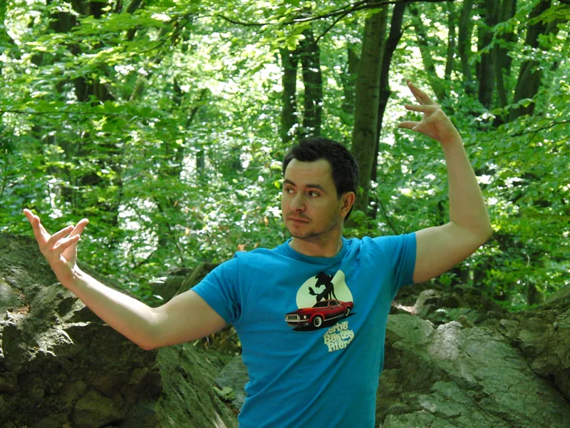
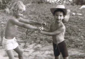

Vorbereitung
Jede Szene beginnt mit einer klaren Idee, präziser Planung und dem Blick für alle Beteiligten.
Von Dresden über die Artistenschule bis zu Film, Bühne und internationalen Produktionen.

Seit der Kindheit ist Bewegung der rote Faden. Die Ausbildung an der Staatlichen Ballettschule und Schule für Artistik Berlin legte den Grundstein – mit der Spezialisierung als Trampolin-Kaskadeur.
Daraus entwickelte sich ein vielseitiges Profil: Stunt, Schauspiel, Bühnenkampf, Pferdearbeit, Comedy und Artistik. Die Arbeit verbindet technische Vorbereitung mit der Energie eines lebendigen Moments.
Ich erblickte das Licht zur Welt am 13. Februar 1980 in Dresden. Meine Mutter, Irina Simeonow (geb. Schönball), war aktive Sportlerin und Trainerin beim PSV Dresden für Sport-Akrobatik und Trampolin. Mein Vater, Stefan Iliev Simeonow, arbeitete als Berufskraftfahrer und später in einer Möbelspedition. Mein Bruder Marko besuchte die Dresdner KJS und ging 1989 an die Staatliche Ballettschule und Schule für Artistik Berlin. Er spezialisierte sich auf Schleuderbrett-Akrobatik sowie Todesrad, Trampolin und Globe of Speed.
Meine ersten sechs Schuljahre verbrachte ich auf der 35. Mittelschule Dresden, danach weitere vier Jahre auf der 36. Mittelschule. Ich suchte neue Herausforderungen und begann eine Ausbildung zum Artist an der Staatlichen Ballettschule und Schule für Artistik. Neben der Ausbildung lernte ich Gitarre spielen und beschäftigte mich mit Zauberei. Seit meinem achten Lebensjahr war es mein Traum, Stuntman zu werden. Nach der Wende schrieb ich mit zwölf Jahren an Action Concept, bekam jedoch die Rückmeldung, dass ich noch zu jung sei – ein Grund mehr, den Weg über die Artistenschule zu gehen.
Nach dem Engagement 2000/2001 im Friedrichstadtpalast Berlin leistete ich ab Januar 2002 Grundwehrdienst beim 2. Fallschirmjägerbataillon 373 in Doberlug-Kirchhain. 2004 lernte ich das Stuntteam „Artist of Stunt“ kennen. Es folgten zwei Jahre intensives Stunttraining, Auftritte und Shows. 2006 gründete ich das Stuntteam „Action Artist“: Zur Hälfte Artisten und Xtreme-Artisten, die gemeinsam eine neue Nische entwickelten. 2009 wurde das Team aufgelöst, viele der daraus entstandenen Freundschaften und Zusammenarbeit bestehen jedoch bis heute.
Seit 2005 bin ich Stammfahrer bei Globe of Speed und seit 2008 Todesrad-Läufer. 2003 arbeitete ich ein ganzes Jahr als Schleuderbrett-Akrobat und Turmspringer; 2006 begann ich als Action-Darsteller zu arbeiten, seit 2000 auch als Zauberer. Bewegungsabläufe schnell aufzunehmen und wieder abrufen zu können half mir, in vielen Genres Fuß zu fassen.


Jede Szene beginnt mit einer klaren Idee, präziser Planung und dem Blick für alle Beteiligten.
Action wirkt dann, wenn Figur, Bewegung und Geschichte zusammenkommen.
Gute Action entsteht im Zusammenspiel von Regie, Crew, Darstellenden und Spezialisten.